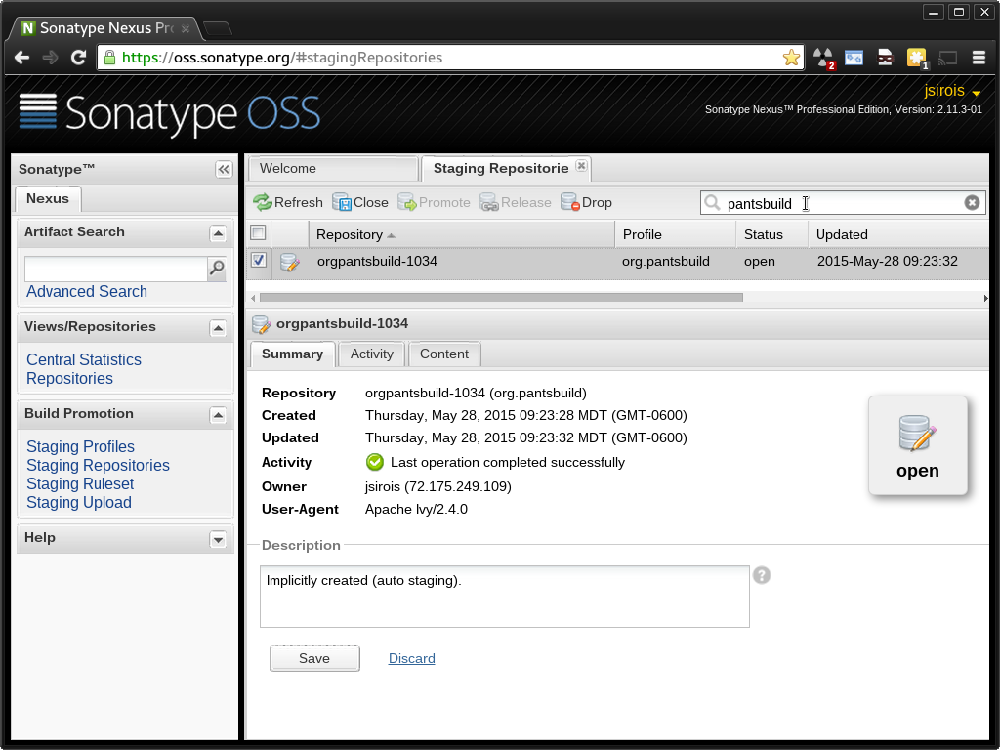
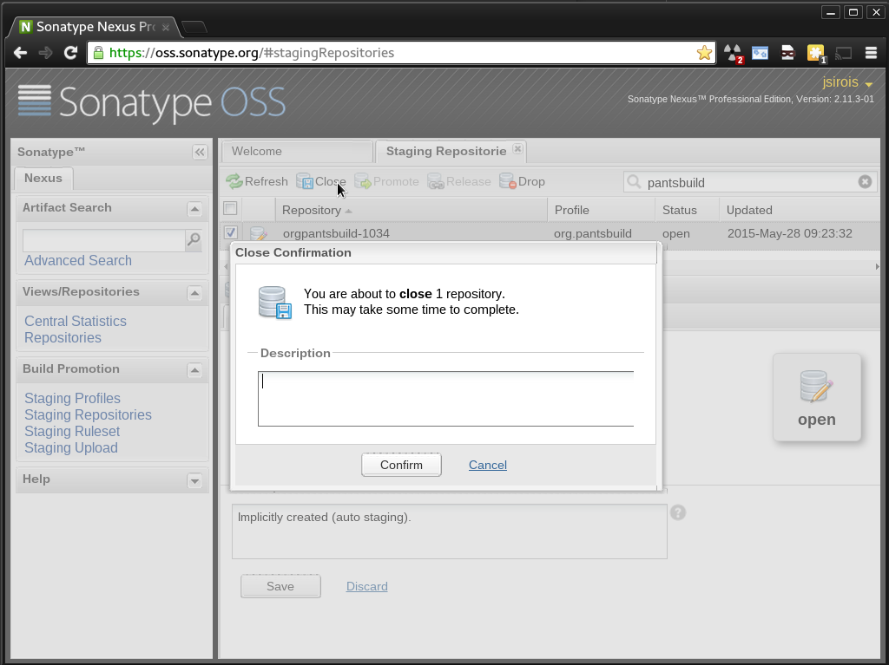

JVM Artifact Release Process
This page describes how to make a versioned release of the Pants jvm tools to Maven Central.
Releasing jvm tools largely follows the standard jar publishing process, but has some non-standard initial one-time setup.
At a high level, releasing pants jvm artifacts involves:
- Deciding when to release. At present this is ad-hoc, typically when a change has been made to a tool and the author wants to use a version incorporating that change.
- (optional) Perform a release dry run.
- Staging the release to OSSRH.
- Promoting the release to Maven Central.
- Dogfood the release.
Prerequisites
You must be at least a committer in the pantsbuild GitHub organisation to publish pants artifacts. If you aren't yet, you need only ping the pants-devel group to inquire about getting a release performed.
If you are a committer, there are four additional requirements to satisfy in order to be able publish to Maven Central:
-
Create and publish a pgp key if you don't already have a published pgp key. There is nothing Maven Central specific about this, but Sonatype does provide some instructions you might follow.
-
Create a sonatype.org JIRA account if you don't already have one.
-
Ask an existing Pants Maven Central releaser to create a sonatype.org JIRA ticket to get you added to the org.pantsbuild maintainers. You'll need to give them your sonatype.org JIRA account id. Here's an example ticket they can use as a template. Once this is done and you've performed your 1st release, add yourself to the Releasers section below.
-
Create a
~/.config/pants/release/jvm/pgp.propertiesfile to store the credentials Pants needs to sign artifacts uploaded to sonatype.org. This process is described below. -
Create an entry in your
~/.netrcfile to enable authentication to Sonatype.machine oss.sonatype.org login jsirois password XYX
PGP Credentials
Artifacts released to Maven Central must be pgp-signed. In order to sign artifacts, the pants jar publishing process currently needs access to your pgp key passphrase via file (There is an issue here tracking a better solution).
First you'll need to create a secure java properties file to hold your pgp credentials:
$ mkdir -p ~/.config/pants/release/jvm && \ touch ~/.config/pants/release/jvm/pgp.properties && \ chmod 600 ~/.config/pants/release/jvm/pgp.properties
The properties file supports the following keys with noted defaults if omitted:
-
pgp.secringAssumes your pgp implementation is gpg and defaults to
~/.gnupg/secring.gpgIf you are using gpg version >=2.1 this file will NOT exist. You need to run:
$ gpg --export-secret-keys >~/.gnupg/secring.gpg
-
pgp.keyidDefaults to
auto. If you're unsure which pgp keyautowill select and you use gpg, you can determine the key id and verify the passphrase in one fell swoop with the following command:$ killall gpg-agent; echo | gpg --sign -vv >/dev/null gpg: using PGP trust model gpg: key 67B5C626: accepted as trusted key gpg: no running gpg-agent - starting '/usr/bin/gpg-agent' gpg: waiting for the agent to come up ... (5s) gpg: connection to agent established [pinentry prompts for passphrase] gpg: writing to stdout gpg: RSA/SHA256 signature from: "67B5C626 John Sirois <john.sirois@gmail.com>"
In this case the default key id is
67B5C626. You can add an entry to the properties file instead of relying on the defaultautosetting if you prefer to be explicit like so:$ echo pgp.keyid=67B5C626 >> ~/.config/pants/release/jvm/pgp.properties
The keyid is the "short key id". It should be 32 bits / 8 hex characters. If you are using gpg version >=2.1 it will tell you the "long key id", so you need to use the last 8 hex characters.
-
pgp.passwordThis key is required, you must use the passphrase of the pgp key identified by
pgp.keyidas the value. If you did not specify apgp.keyidthen this should be the passphrase for your default pgp key.
Dry Run
Releases should only be published from master, so get on master and ensure the changes you want to publish are present. After confirming this, you can test out the publish in 2 ways:
-
A dry run to get a preview of what will be published and why:
$ ./pants clean-all publish.jar src/{java,scala}::
-
A local publish to get a preview of both what will be published and why as well as the changelogs:
$ ./pants clean-all publish.jar --no-publish-jar-dryrun --local=/tmp/m2 src/{java,scala}::
Note that this "dry-run" technique somewhat confusingly passes
--no-publish-jar-dryrunbut only because the publish is local and to a temporary dir (the argument to--local). You can also poke around in the/tmp/m2local maven repo if you're curious or want to double-check fine details of exactly what will be pushed.
Staging to OSSRH
When you're ready to publish to Maven Central, the 1st step is to publish the jvm tool jars to Sonatype's OSSRH staging repository. Note that nothing will actually go live until the staging repository is released by you later, so this step has no consequences of global importance. Pants will create and push git tags for the staging releases you do here, but in the worst case the tags will point to releases never promoted to Maven Central, which is fine.
To do the staging release, it's a normal pants publish and it's easiest to use the following command, which will publish everything that's changed and only those things that have changed since the last publish:
$ ./pants publish.jar --no-publish-jar-dryrun src/{java,scala}::
Promoting to Maven Central
With the jvm tools published to the Sonatype OSSRH staging repository, you'll need to complete the release using Sonatype's OSSRH Nexus repository manager web UI. Sonatype describes the process here but the process is also described below:
-
Log into Sonatype's OSSRH Nexus repository manager web UI.
You do this here. You should use the same user id and password you use to login to the Sonatype JIRA server.
-
Find the staging repository auto-created when you staged the release above.
As shown below, in the 'Staging Repositories' tab enter
pantsbuildin the search box in the upper-right corner to filter the display to your staging repository.
There should be exactly one repository listed and you should select its checkbox.
-
Close the selected staging repository.
As shown below, with the staging repository selected, there will be a 'Close' button available. Look for in in the menu bar across the top of the repository list. Click it.

This will trigger a validation process that checks the staged artifacts for signatures, a valid POM and more. When validation is complete, you'll receive an email from nexus@oss.sonatype.org with the subject 'Nexus: Staging Completed'. You may need to click the 'Refresh' button in the UI to see the 'Close' button transition to a disabled state and the 'Release' button to its right transition to an enabled state.
-
Release the selected staging repository.
As shown below, with the staging repository selected and closed, there will be a 'Release' button available. Click it.

This will trigger another round of artifact validation and another email, this time with subject 'Nexus: Promotion Completed'. At this point you're all done and just need to wait ~10 minutes for the artifacts to be available in Maven Central and ~2 hours to show up in the search index.
Dogfood
Check Maven Central to ensure everything looks good. You can browse the
org.pantsbuild subtree
to find the artifact(s) you just released. Once available you can send
out an RB bumping the versions of the released tools in BUILD.tools.
Releasers
The following folks are set up to publish to Maven Central for org.pantsbuild:
- David Turner dturner@twopensource.com
- Eric Ayers ericzundel@gmail.com
- John Sirois john.sirois@gmail.com
- Stu Hood stuhood@gmail.com